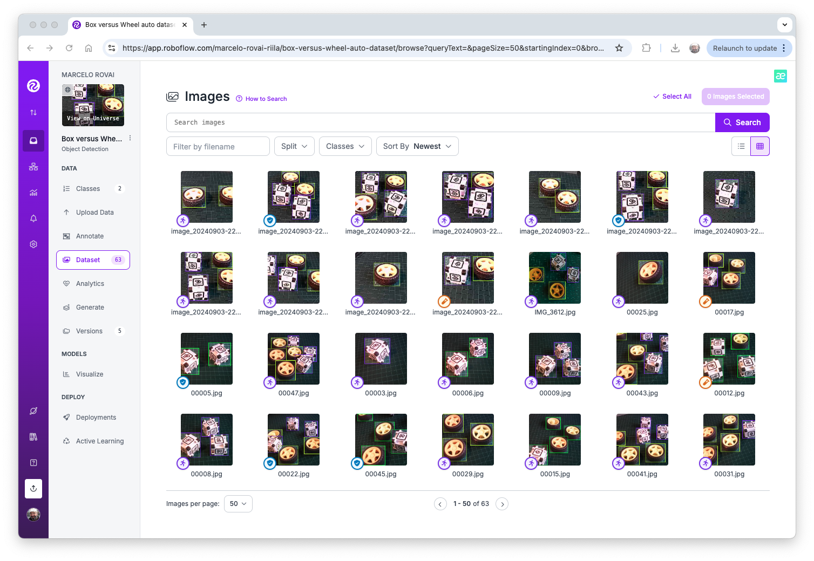
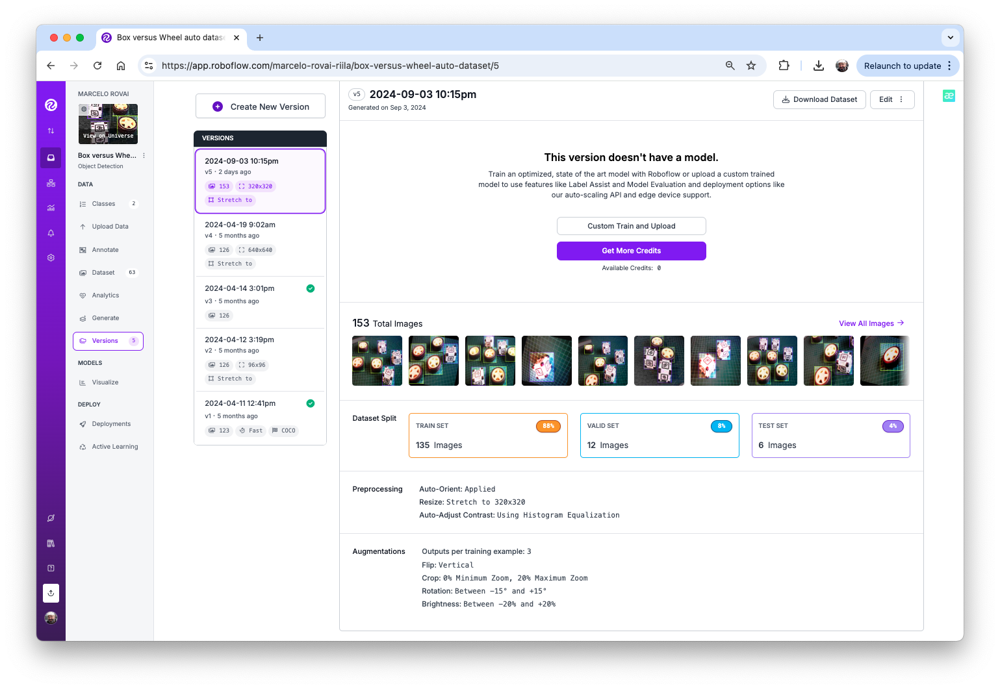
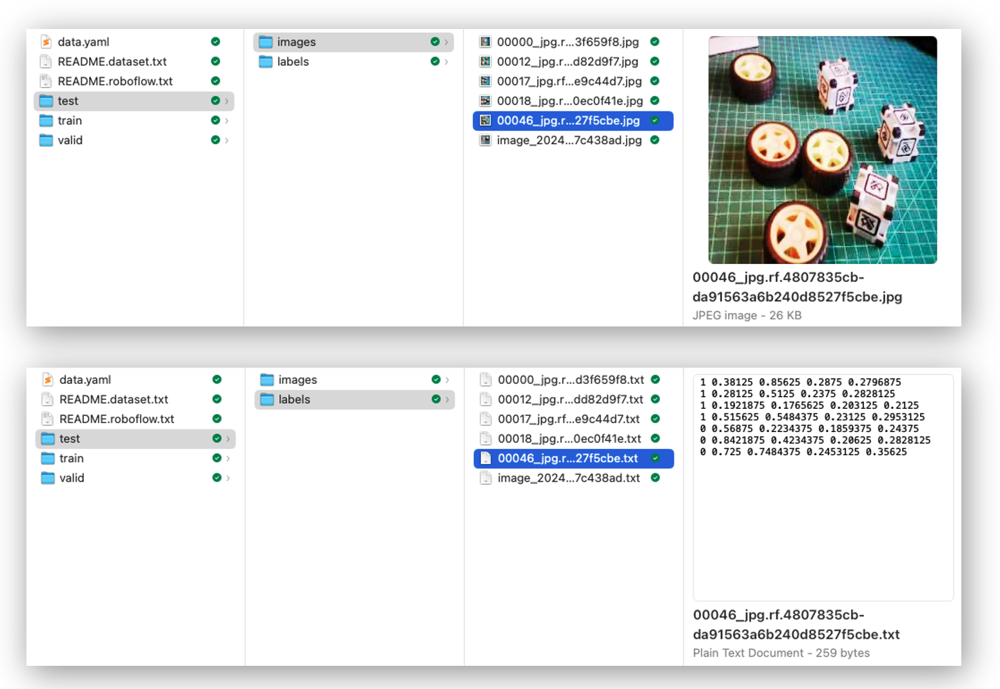
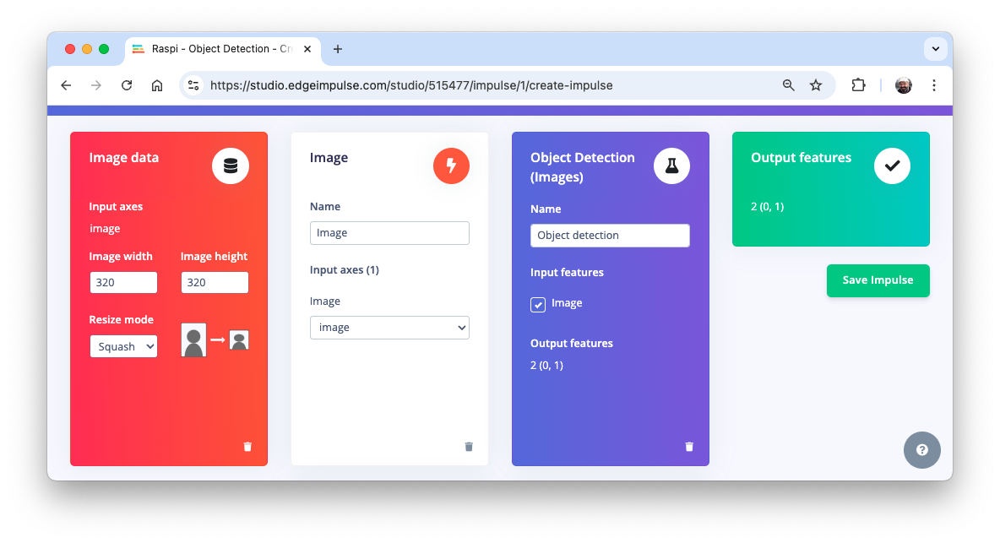

Custom Object Detection Project
Object Detection Project
In this chapter, we will develop a complete Object Detection project from data collection, labelling, training, and deployment. As we did with the Image Classification project, the trained and converted model will be used for inference.

We will use the same dataset to train 3 models: SSD-MobileNet V2, FOMO, and YOLO.
The Goal
All Machine Learning projects need to start with a goal. Let’s assume we are in an industrial facility and must sort and count wheels and special boxes.

In other words, we should perform a multi-label classification, where each image can have three classes:
Background (no objects)
Box
Wheel
Raw Data Collection
Once we have defined our Machine Learning project goal, the next and most crucial step is collecting the dataset. We can use a phone, the Raspi, or a mix to create the raw dataset (with no labels). Let’s use the simple web app on our Raspberry Pi to view the QVGA (320 x 240) captured images in a browser.
From GitHub, get the Python script get_img_data.py and open it in the terminal:
python3 get_img_data.py Access the web interface:
- On the Raspberry Pi itself (if you have a GUI): Open a web browser and go to
http://localhost:5000 - From another device on the same network: Open a web browser and go to
http://<raspberry_pi_ip>:5000(Replace<raspberry_pi_ip>with your Raspberry Pi’s IP address). For example:http://192.168.4.210:5000/
 The Python script creates a web-based interface for capturing and organizing image datasets using a Raspberry Pi and its camera. It’s handy for machine learning projects that require labeled image data, or not, as in our case here.
The Python script creates a web-based interface for capturing and organizing image datasets using a Raspberry Pi and its camera. It’s handy for machine learning projects that require labeled image data, or not, as in our case here.
Access the web interface from a browser, enter a generic label for the images you want to capture, and press Start Capture.

Note that the images to be captured will have multiple labels that should be defined later.
Use the live preview to position the camera, then click Capture Image to save the images under the current label (in this case, box-wheel).
When we have enough images, we can press Stop Capture. The captured images are saved in the folder dataset/box-wheel:

Get around 60 images. Try to capture different angles, backgrounds, and light conditions. FileZilla can transfer the raw dataset you created to your main computer.
Labeling Data
The next step in an Object Detect project is to create a labeled dataset. We should label the raw dataset images, creating bounding boxes around each picture’s objects (box and wheel). We can use labeling tools such as LabelImg, CVAT, Roboflow, or even the Edge Impulse Studio. Once we have explored the Edge Impulse tool in other labs, let’s use Roboflow here.
We are using Roboflow (free version) here for two main reasons. 1) We can have an auto-labeler, and 2) The annotated dataset is available in several formats and can be used both on Edge Impulse Studio (we will use it for MobileNet V2 and FOMO train) and on CoLab (YOLOv8 or YOLOv11 train), for example. An annotated dataset created on Edge Impulse (Free account) cannot be used for training on other platforms.
We should upload the raw dataset to Roboflow. Create a free account there and start a new project, for example, (“box-versus-wheel”).
We will not go into great detail about the Roboflow process, as many tutorials are already available.
Annotate
Once the project is created and the dataset is uploaded, you can use the “Auto-Label” tool to generate annotations, or do it manually.

The Label Assist tool can be handy for the labeling process.
Note that you should also upload images with only a background, which should be saved w/o any annotations using the Null Tool option.
Once all images are annotated, split them into training, validation, and test sets.

Data Pre-Processing
The last step in the dataset is preprocessing to generate a final training version. Let’s resize all images to 320x320 and generate augmented versions of each image (augmentation) to create new training examples from which our model can learn.
For augmentation, we will rotate the images (+/-15o), crop, and vary the brightness and exposure.

At the end of the process, we will have 153 images.

Now, you should export the annotated dataset in a format that Edge Impulse, Ultralitics, and other frameworks/tools understand, for example, YOLOv8 (or v11). Let’s download a zipped version of the dataset to our desktop.
Here, it is possible to review how the dataset was structured

There are 3 separate folders, one for each split (train/test/valid). For each of them, there are 2 subfolders, images, and labels. The pictures are stored as image_id.jpg and images_id.txt, where “image_id” is unique for every picture.
The labels file format will be class_id bounding box coordinates, where in our case, class_id will be 0 for box and 1 for wheel. The numerical id (o, 1, 2…) will follow the alphabetical order of the class name.
The data.yaml file contains information about the dataset, such as the classes’ names (names: ['box', 'wheel']) following the YOLO format.
And that’s it! We are ready to start training using Edge Impulse Studio (as we will in the next step), Ultralytics (as we will when discussing YOLO), or even training from scratch on CoLab (as we did with the Cifar-10 dataset in the Image Classification lab).
The pre-processed dataset can be found at the Roboflow site, or here:

Training an SSD MobileNet Model on Edge Impulse Studio
Go to Edge Impulse Studio, enter your credentials at Login (or create an account), and start a new project.
Here, you can clone the project developed for this hands-on lab: Raspi - Object Detection.
On the Project Dashboard tab, go down to Project info, and for Labeling method select Bounding boxes (object detection)
Uploading the annotated data
In Studio, go to the Data acquisition tab, and in the UPLOAD DATA section, upload the raw dataset from your computer.
We can use the Select a folder option, choosing, for example, the train folder on your computer, which contains two sub-folders: images and labels. Select the Image label format, “YOLO TXT”, upload it into the category Training, and press Upload data.

Repeat the process for the test data (upload both folders, test, and validation). At the end of the upload process, you should end with the annotated dataset of 153 images split in the train/test (84%/16%).
Note that labels will be stored at the labels files
0and1, which are equivalent toboxandwheel.

The Impulse Design
The first thing to define when we enter the Create impulse step is to describe the target device for deployment. A pop-up window will appear. We will select Raspberry 4, an intermediary device between the Raspi-Zero and the Raspi-5.
This choice will not interfere with the training; it will only give us an idea about the latency of the model on that specific target.

In this phase, you should define how to:
Pre-processing consists of resizing the individual images. In our case, the images were pre-processed on Roboflow, to
320x320, so let’s keep it. The resize will not matter here because the images are already squared. If you upload a rectangular image, squash it (squared form, without cropping). Afterward, you could define if the images are converted from RGB to Grayscale or not.Design a Model, in this case, “Object Detection.”

Preprocessing all dataset
In the section Image, select Color depth as RGB, and press Save parameters.

The Studio automatically moves to the next section, Generate features, where all samples will be preprocessed, resulting in 480 objects: 207 boxes and 273 wheels.

The feature explorer shows that all samples exhibit a good separation after the feature generation.
Model Design, Training, and Test
For training, we should select a pre-trained model. Let’s use the MobileNetV2 SSD FPN-Lite (320x320 only).
Base Network (MobileNetV2)
Detection Network (Single Shot Detector or SSD)
Feature Extractor (FPN-Lite)
It is a pre-trained object detection model that locates up to 10 objects in an image and outputs a bounding box for each. The model is approximately 3.7 MB. It supports an RGB input at 320x320px.
Regarding the training hyper-parameters, the model will be trained with:
- Epochs: 25
- Batch size: 32
- Learning Rate: 0.15.
For validation during training, 20% of the dataset (validation_dataset) will be spared.

As a result, the model achieves an overall precision score (based on COCO mAP) of 88.8%, higher than the score on the test data (83.3%).
Deploying the model
We have two ways to deploy our model:
- TFLite model, which lets deploy the trained model as
.tflitefor the Raspberry Pi to run it using Python. - Linux (AARCH64), a binary for Linux (AARCH64), implements the Edge Impulse Linux protocol, which lets us run our models on any Linux-based development board, with SDKs such as Python. See the documentation for more information and setup instructions.
Let’s deploy the TFLite model. On the Dashboard tab, go to Transfer learning model (int8 quantized) and click on the download icon:

Transfer the model from your computer to the Raspi folder./models and capture or get some images for inference and save them in the folder ./images.
Inference and Post-Processing
The inference can be made as discussed in the Pre-Trained Object Detection Models Overview. Let’s start a new notebook to follow all the steps to detect cubes and wheels in an image.
Import the needed libraries:
import time
import numpy as np
import matplotlib.pyplot as plt
import matplotlib.patches as patches
from PIL import Image
from ai_edge_litert.interpreter import InterpreterDefine the model path and labels:
model_path = "./models/ei-raspi-object-detection-SSD-MobileNetv2-320x0320-\
int8.lite"
labels = ['box', 'wheel']Remember that the model will output the class ID as values (0 and 1), following an alphabetic order regarding the class names.
Load the model, allocate the tensors, and get the input and output tensor details:
# Create a LiteRT Interpreter
interpreter = Interpreter(model_path=model_path)
interpreter.allocate_tensors()
# Get input and output tensors
input_details = interpreter.get_input_details()
output_details = interpreter.get_output_details()One crucial difference to note is that the dtype of the input details of the model is now int8, which means that the input values go from -128 to +127, while each pixel of our raw image goes from 0 to 256. This means that we should pre-process the image to match it. We can check here:
input_dtype = input_details[0]['dtype']
input_dtypenumpy.int8So, let’s open the image and show it:
# Load the image
img_path = "./images/box_2_wheel_2.jpg"
orig_img = Image.open(img_path)
# Display the image
plt.figure(figsize=(6, 6))
plt.imshow(orig_img)
plt.title("Original Image")
plt.show()
And perform the pre-processing:
scale, zero_point = input_details[0]['quantization']
img = orig_img.resize((input_details[0]['shape'][1],
input_details[0]['shape'][2]))
img_array = np.array(img, dtype=np.float32) / 255.0
img_array = (img_array / scale + zero_point).clip(-128, 127).astype(np.int8)
input_data = np.expand_dims(img_array, axis=0)Checking the input data, we can verify that the input tensor is compatible with what is expected by the model:
input_data.shape, input_data.dtype((1, 320, 320, 3), dtype('int8'))Now, it is time to perform the inference. Let’s also calculate the latency of the model:
# Inference on Raspi-Zero
start_time = time.time()
interpreter.set_tensor(input_details[0]['index'], input_data)
interpreter.invoke()
end_time = time.time()
inference_time = (end_time - start_time) * 1000 # Convert to milliseconds
print ("Inference time: {:.1f}ms".format(inference_time))The model will take around 600ms to perform the inference in the Raspi-Zero, which is around 5 times longer than a Raspi-5.
Now, we can get the output classes of objects detected, its bounding boxes coordinates, and probabilities.
boxes = interpreter.get_tensor(output_details[1]['index'])[0]
classes = interpreter.get_tensor(output_details[3]['index'])[0]
scores = interpreter.get_tensor(output_details[0]['index'])[0]
num_detections = int(interpreter.get_tensor(output_details[2]['index'])[0])for i in range(num_detections):
if scores[i] > 0.5: # Confidence threshold
print(f"Object {i}:")
print(f" Bounding Box: {boxes[i]}")
print(f" Confidence: {scores[i]}")
print(f" Class: {classes[i]}")From the results, we can see that 4 objects were detected: two with class ID 0 (box)and two with class ID 1 (wheel), what is correct!
Let’s visualize the result for a threshold of 0.5
threshold = 0.5
plt.figure(figsize=(6,6))
plt.imshow(orig_img)
for i in range(num_detections):
if scores[i] > threshold:
ymin, xmin, ymax, xmax = boxes[i]
(left, right, top, bottom) = (xmin * orig_img.width,
xmax * orig_img.width,
ymin * orig_img.height,
ymax * orig_img.height)
rect = plt.Rectangle((left, top), right-left, bottom-top,
fill=False, color='red', linewidth=2)
plt.gca().add_patch(rect)
class_id = int(classes[i])
class_name = labels[class_id]
plt.text(left, top-10, f'{class_name}: {scores[i]:.2f}',
color='red', fontsize=12, backgroundcolor='white')
But what happens if we reduce the threshold to 0.3, for example?

We start to see false positives and multiple detections, where the model detects the same object multiple times with different confidence levels and slightly different bounding boxes.
Commonly, sometimes, we need to adjust the threshold to smaller values to capture all objects, avoiding false negatives, which would lead to multiple detections.
To improve the detection results, we should implement Non-Maximum Suppression (NMS), which helps eliminate overlapping bounding boxes and keeps only the most confident detection.
For that, let’s create a general function named non_max_suppression(), with the role of refining object detection results by eliminating redundant and overlapping bounding boxes. It achieves this by iteratively selecting the detection with the highest confidence score and removing other significantly overlapping detections based on an Intersection over Union (IoU) threshold.
def non_max_suppression(boxes, scores, threshold):
# Convert to corner coordinates
x1 = boxes[:, 0]
y1 = boxes[:, 1]
x2 = boxes[:, 2]
y2 = boxes[:, 3]
areas = (x2 - x1 + 1) * (y2 - y1 + 1)
order = scores.argsort()[::-1]
keep = []
while order.size > 0:
i = order[0]
keep.append(i)
xx1 = np.maximum(x1[i], x1[order[1:]])
yy1 = np.maximum(y1[i], y1[order[1:]])
xx2 = np.minimum(x2[i], x2[order[1:]])
yy2 = np.minimum(y2[i], y2[order[1:]])
w = np.maximum(0.0, xx2 - xx1 + 1)
h = np.maximum(0.0, yy2 - yy1 + 1)
inter = w * h
ovr = inter / (areas[i] + areas[order[1:]] - inter)
inds = np.where(ovr <= threshold)[0]
order = order[inds + 1]
return keepHow it works:
Sorting: It starts by sorting all detections by their confidence scores, highest to lowest.
Selection: It selects the highest-scoring box and adds it to the final list of detections.
Comparison: This selected box is compared with all remaining lower-scoring boxes.
Elimination: Any box that overlaps significantly (above the IoU threshold) with the selected box is eliminated.
Iteration: This process repeats with the next highest-scoring box until all boxes are processed.
Now, we can define a more precise visualization function that will take into consideration an IoU threshold, detecting only the objects that were selected by the non_max_suppression function:
def visualize_detections(image, boxes, classes, scores,
labels, threshold, iou_threshold):
if isinstance(image, Image.Image):
image_np = np.array(image)
else:
image_np = image
height, width = image_np.shape[:2]
# Convert normalized coordinates to pixel coordinates
boxes_pixel = boxes * np.array([height, width, height, width])
# Apply NMS
keep = non_max_suppression(boxes_pixel, scores, iou_threshold)
# Set the figure size to 12x8 inches
fig, ax = plt.subplots(1, figsize=(12, 8))
ax.imshow(image_np)
for i in keep:
if scores[i] > threshold:
ymin, xmin, ymax, xmax = boxes[i]
rect = patches.Rectangle((xmin * width, ymin * height),
(xmax - xmin) * width,
(ymax - ymin) * height,
linewidth=2, edgecolor='r', facecolor='none')
ax.add_patch(rect)
class_name = labels[int(classes[i])]
ax.text(xmin * width, ymin * height - 10,
f'{class_name}: {scores[i]:.2f}', color='red',
fontsize=12, backgroundcolor='white')
plt.show()Now we can create a function that will call the others, performing inference on any image:
def detect_objects(img_path, conf=0.5, iou=0.5):
orig_img = Image.open(img_path)
scale, zero_point = input_details[0]['quantization']
img = orig_img.resize((input_details[0]['shape'][1],
input_details[0]['shape'][2]))
img_array = np.array(img, dtype=np.float32) / 255.0
img_array = (img_array / scale + zero_point).clip(-128, 127).\
astype(np.int8)
input_data = np.expand_dims(img_array, axis=0)
# Inference on Raspi-Zero
start_time = time.time()
interpreter.set_tensor(input_details[0]['index'], input_data)
interpreter.invoke()
end_time = time.time()
inference_time = (end_time - start_time) * 1000 # Convert to ms
print ("Inference time: {:.1f}ms".format(inference_time))
# Extract the outputs
boxes = interpreter.get_tensor(output_details[1]['index'])[0]
classes = interpreter.get_tensor(output_details[3]['index'])[0]
scores = interpreter.get_tensor(output_details[0]['index'])[0]
num_detections = int(interpreter.get_tensor(output_details[2]['index'])[0])
visualize_detections(orig_img, boxes, classes, scores, labels,
threshold=conf,
iou_threshold=iou)Now, running the code, having the same image again with a confidence threshold of 0.3, but with a small IoU:
img_path = "./images/box_2_wheel_2.jpg"
detect_objects(img_path, conf=0.3,iou=0.05)
Training a FOMO Model at Edge Impulse Studio
The inference with the SSD MobileNet model worked well, but the latency was significantly high. The inference varied from 0.5 to 1.3 seconds on a Raspi-Zero, which means around or less than 1 FPS (1 frame per second). One alternative to speed up the process is to use FOMO (Faster Objects, More Objects).
This novel machine learning algorithm lets us count multiple objects and find their location in an image in real-time using up to 30x less processing power and memory than MobileNet SSD or YOLO. The main reason this is possible is that while other models calculate the object’s size by drawing a square around it (bounding box), FOMO ignores the size of the image, providing only the information about where the object is located in the image through its centroid coordinates.
How FOMO works?
In a typical object detection pipeline, the first stage is extracting features from the input image. FOMO leverages MobileNetV2 to perform this task. MobileNetV2 processes the input image to produce a feature map that captures essential characteristics, such as textures, shapes, and object edges, in a computationally efficient way.

Once these features are extracted, FOMO’s simpler architecture, focused on center-point detection, interprets the feature map to determine where objects are located in the image. The output is a grid of cells, where each cell represents whether or not an object center is detected. The model outputs one or more confidence scores for each cell, indicating the likelihood of an object being present.
Let’s see how it works on an image.
FOMO divides the image into blocks of pixels using a factor of 8. For the input of 96x96, the grid would be 12x12 (96/8=12). For a 160x160, the grid will be 20x20, and so on. Next, FOMO will run a classifier through each pixel block to calculate the probability that there is a box or a wheel in each of them and, subsequently, determine the regions that have the highest probability of containing the object (If a pixel block has no objects, it will be classified as background). From the overlap of the final region, the FOMO provides the coordinates (related to the image dimensions) of the centroid of this region.
Trade-off Between Speed and Precision:
- Grid Resolution: FOMO uses a grid of fixed resolution, meaning each cell can detect if an object is present in that part of the image. While it doesn’t provide high localization accuracy, it makes a trade-off by being fast and computationally light, which is crucial for edge devices.
- Multi-Object Detection: Since each cell is independent, FOMO can detect multiple objects simultaneously in an image by identifying multiple centers.
Impulse Design, new Training and Testing
Return to Edge Impulse Studio, and in the Experiments tab, create another impulse. Now, the input images should be 160x160 (this is the expected input size for MobilenetV2).

On the Image tab, generate the features and go to the Object detection tab.
We should select a pre-trained model for training. Let’s use the FOMO (Faster Objects, More Objects) MobileNetV2 0.35.

Regarding the training hyper-parameters, the model will be trained with:
- Epochs: 30
- Batch size: 32
- Learning Rate: 0.001.
For validation during training, 20% of the dataset (validation_dataset) will be spared. We will not apply Data Augmentation for the remaining 80% (train_dataset) because our dataset was already augmented during the labeling phase at Roboflow.
As a result, the model ends with an overall F1 score of 93.3% with an impressive latency of 8ms (Raspi-4), around 60X less than we got with the SSD MovileNetV2.
Note that FOMO automatically added a third label background to the two previously defined boxes (0) and wheels (1).
On the Model testing tab, we can see that the accuracy was 94%. Here is one of the test sample results:

In object detection tasks, accuracy is generally not the primary evaluation metric. Object detection involves classifying objects and providing bounding boxes around them, making it a more complex problem than simple classification. The issue is that we do not have the bounding box, only the centroids. In short, using accuracy as a metric could be misleading and may not provide a complete understanding of how well the model is performing.
Deploying the model
As we did in the previous section, we can deploy the trained model as TFLite or Linux (AARCH64). Let’s do it now as Linux (AARCH64), a binary that implements the Edge Impulse Linux protocol.
Edge Impulse for Linux models is delivered in .eim format. This executable contains our “full impulse” created in Edge Impulse Studio. The impulse consists of the signal processing block(s) and any learning and anomaly block(s) we added and trained. It is compiled with optimizations for our processor or GPU (e.g., NEON instructions on ARM cores), plus a straightforward IPC layer (over a Unix socket).
At the Deploy tab, select the option Linux (AARCH64), the int8model and press Build.
The model will be automatically downloaded to your computer.
On our Raspi, let’s create a new working area:
cd ~
cd Documents
mkdir EI_Linux
cd EI_Linux
mkdir models
mkdir imagesRename the model for easy identification:
For example, raspi-object-detection-linux-aarch64-FOMO-int8.eim and transfer it to the new Raspi folder./models and capture or get some images for inference and save them in the folder ./images.
Inference and Post-Processing
The inference will be made using the Linux Python SDK. This library lets us run machine learning models and collect sensor data on Linux machines using Python. The SDK is open source and available on GitHub at edgeimpulse/linux-sdk-python.
Let’s set up a Virtual Environment for working with the Linux Python SDK
python3 -m venv ~/eilinux
source ~/eilinux/bin/activateAnd Install the all the libraries needed:
sudo apt-get update
sudo apt-get install libatlas-base-dev libportaudio0 libportaudio2
sudo apt-get install libportaudiocpp0 portaudio19-dev
pip3 install edge_impulse_linux -i https://pypi.python.org/simple
pip3 install Pillow matplotlib pyaudio opencv-contrib-python
sudo apt-get install portaudio19-dev
pip3 install pyaudio
pip3 install opencv-contrib-pythonPermit our model to be executable.
chmod +x raspi-object-detection-linux-aarch64-FOMO-int8.eimInstall the Jupiter Notebook on the new environment
pip3 install jupyterRun a notebook locally (on the Raspi-4 or 5 with desktop)
jupyter notebookor on the browser on your computer:
jupyter notebook --ip=192.168.4.210 --no-browserLet’s start a new notebook by following all the steps to detect cubes and wheels on an image using the FOMO model and the Edge Impulse Linux Python SDK.
Import the needed libraries:
import sys, time
import numpy as np
import matplotlib.pyplot as plt
import matplotlib.patches as patches
from PIL import Image
import cv2
from edge_impulse_linux.image import ImageImpulseRunnerDefine the model path and labels:
model_file = "raspi-object-detection-linux-aarch64-int8.eim"
model_path = "models/"+ model_file # Trained ML model from Edge Impulse
labels = ['box', 'wheel']Remember that the model will output the class ID as values (0 and 1), following an alphabetic order regarding the class names.
Load and initialize the model:
# Load the model file
runner = ImageImpulseRunner(model_path)
# Initialize model
model_info = runner.init()The model_info will contain critical information about our model. However, unlike the TFLite interpreter, the EI Linux Python SDK library will now prepare the model for inference.
So, let’s open the image and show it (Now, for compatibility, we will use OpenCV, the CV Library used internally by EI. OpenCV reads the image as BGR, so we will need to convert it to RGB :
# Load the image
img_path = "./images/1_box_1_wheel.jpg"
orig_img = cv2.imread(img_path)
img_rgb = cv2.cvtColor(orig_img, cv2.COLOR_BGR2RGB)
# Display the image
plt.imshow(img_rgb)
plt.title("Original Image")
plt.show()
Now we will get the features and the preprocessed image (cropped) using the runner:
features, cropped = runner.get_features_from_image_auto_studio_setings(img_rgb)And perform the inference. Let’s also calculate the latency of the model:
res = runner.classify(features)Let’s get the output classes of objects detected, their bounding boxes centroids, and probabilities.
print('Found %d bounding boxes (%d ms.)' % (
len(res["result"]["bounding_boxes"]),
res['timing']['dsp'] + res['timing']['classification']))
for bb in res["result"]["bounding_boxes"]:
print('\t%s (%.2f): x=%d y=%d w=%d h=%d' % (
bb['label'], bb['value'], bb['x'],
bb['y'], bb['width'], bb['height']))Found 2 bounding boxes (29 ms.)
1 (0.91): x=112 y=40 w=16 h=16
0 (0.75): x=48 y=56 w=8 h=8The results show that two objects were detected: one with class ID 0 (box) and one with class ID 1 (wheel), which is correct!
Let’s visualize the result (The threshold is 0.5, the default value set during the model testing on the Edge Impulse Studio).
print('\tFound %d bounding boxes (latency: %d ms)' % (
len(res["result"]["bounding_boxes"]),
res['timing']['dsp'] + res['timing']['classification']))
plt.figure(figsize=(5,5))
plt.imshow(cropped)
# Go through each of the returned bounding boxes
bboxes = res['result']['bounding_boxes']
for bbox in bboxes:
# Get the corners of the bounding box
left = bbox['x']
top = bbox['y']
width = bbox['width']
height = bbox['height']
# Draw a circle centered on the detection
circ = plt.Circle((left+width//2, top+height//2), 5,
fill=False, color='red', linewidth=3)
plt.gca().add_patch(circ)
class_id = int(bbox['label'])
class_name = labels[class_id]
plt.text(left, top-10, f'{class_name}: {bbox["value"]:.2f}',
color='red', fontsize=12, backgroundcolor='white')
plt.show()
Conclusion
This chapter has explored the implementation of a custom object detector on edge devices, such as the Raspberry Pi, demonstrating the power and potential of running advanced computer vision tasks on resource-constrained hardware. We’ve covered several vital aspects:
- Model Comparison: We examined object detection models, including SSD-MobileNet and FOMO, and compared their performance and trade-offs on edge devices.
- Training and Deployment: Using a custom dataset of boxes and wheels (labeled on Roboflow), we walked through the process of training models with Edge Impulse Studio and Ultralytics and deploying them on a Raspberry Pi.
- Optimization Techniques: To improve inference speed on edge devices, we explored various optimization methods, such as model quantization (int8).
- Performance Considerations: Throughout the lab, we discussed the balance between model accuracy and inference speed, a critical consideration for edge AI applications.
As discussed earlier, the ability to perform object detection on edge devices opens up numerous possibilities across domains, such as precision agriculture, industrial automation, quality control, smart home applications, and environmental monitoring. By processing data locally, these systems can offer reduced latency, improved privacy, and operation in environments with limited connectivity.
Looking ahead, potential areas for further exploration include: - Implementing multi-model pipelines for more complex tasks - Exploring hardware acceleration options for Raspberry Pi - Integrating object detection with other sensors for more comprehensive edge AI systems - Developing edge-to-cloud solutions that leverage both local processing and cloud resources
Object detection on edge devices can create intelligent, responsive systems that bring the power of AI directly into the physical world, opening up new frontiers in how we interact with and understand our environment.